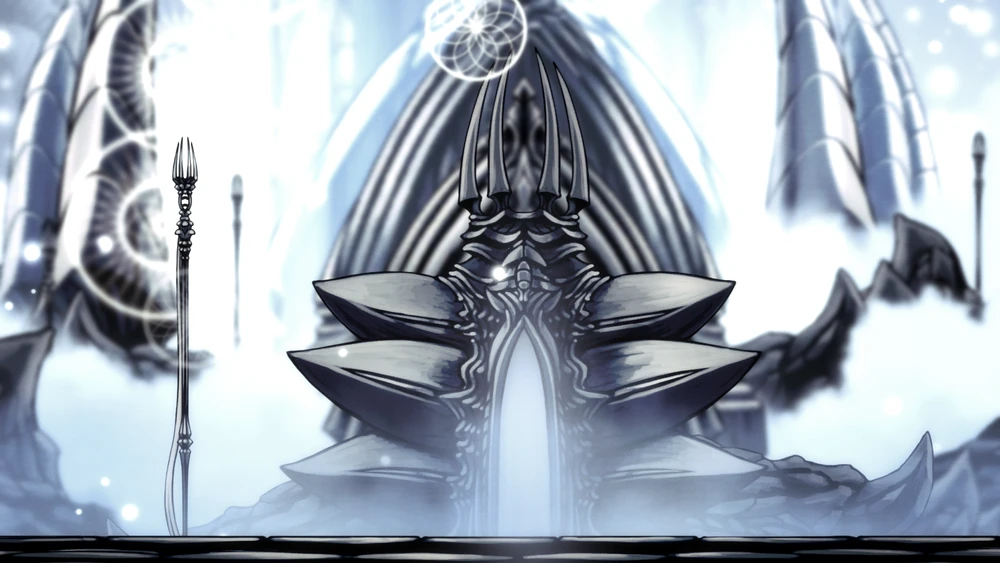
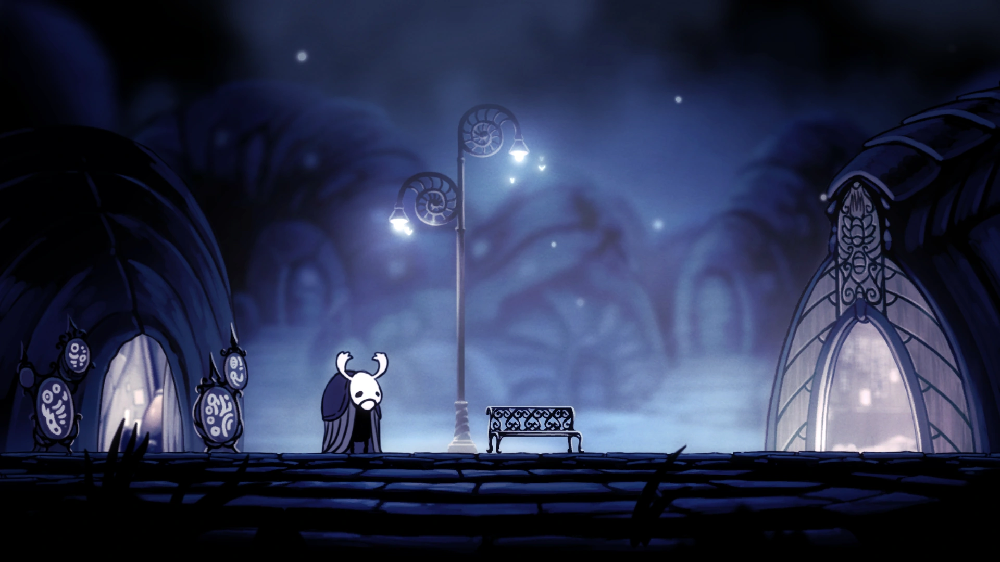

Visit Hallownest
Bear witness to the last and only civilisation, the eternal Kingdom.
Top three activities to do at Hallownest
Pay respects to the Hollow Knight
In the very centre of the city is Fountain Square, where the memorial fountain to the Hollow Knight is located.

Bask in the glory of the White Palace
Originally located in the Palace Grounds in Ancient Basin, the White Palace was where the Pale King ruled over Hallownest.

Greet Elderbug (mandatory) in Dirtmouth
Dirtmouth is located right above the ruins of the kingdom of Hallownest, in a barren valley with rare tufts of grass, safe from the winds of the wasteland.

Your guide
"I'm a cartographer by trade, and I'm working on mapping this area right now. Would you like to buy a copy of my work so far?"